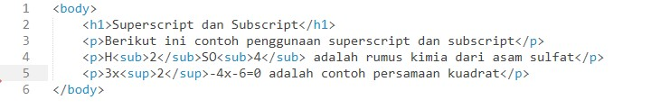

Membuat Superscript dan Subscript
Superscript dan Subscript
Berikut ini contoh penggunaan superscript dan subscript
H2SO4 adalah rumus kimia dari asam sulfat
3x2-4x-6=0 adalah contoh persamaan kuadrat
Analisis: Ketika kita ingin membuat sebuah pangkat atau persamaan kuadrat dalam matematika, maka dalam html terdapat tag khusus yaitu subscript, dan ketika ingin membuat sebuah persamaan kimia, maka dalam html tagnya adalah superscript
